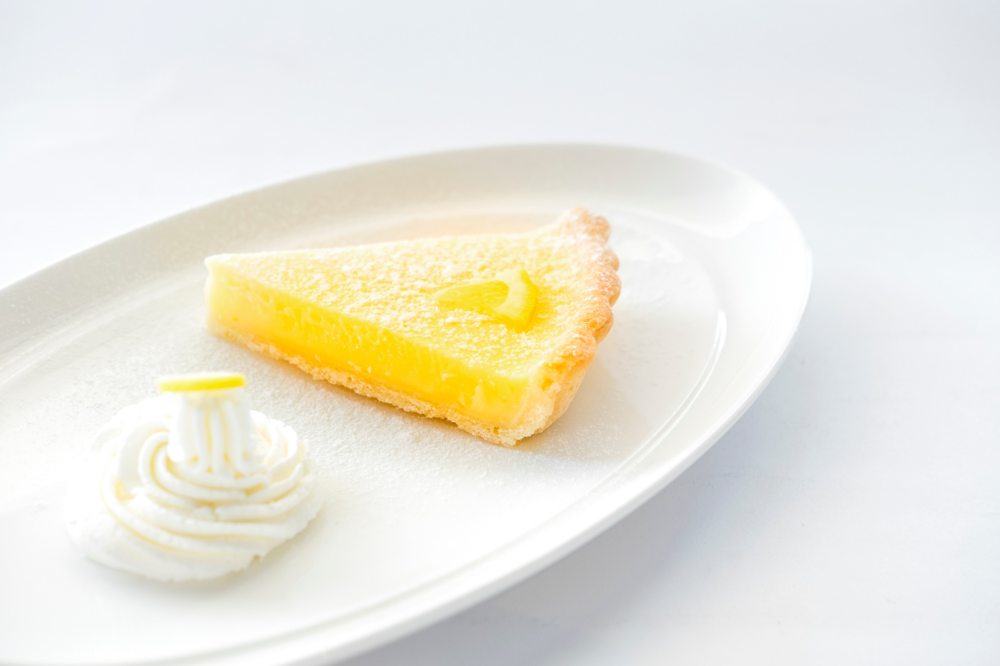

- トップ >
- 基礎知識
チーズの加工工程について
- チーズを加工する過程はプロセスチーズとナチュラルチーズによって異なっていますがここではプロセスチーズについて書いています。
プロセスチーズ
- 原材料準備
- プロセスチーズの主な原材料はナチュラルチーズです。そのため、厳選されたナチュラルチーズが工場に集められます。
- 加工
- 集められたナチュラルチーズを砕き混ぜ合わせ、窯の中で蒸気を入れながら加熱しかき混ぜてプロセスチーズにします。 そして、準備しておいた型に流し込み、冷やして固めておきます。
- 包装・出荷
- 加工されたチーズは包装され、それぞれの商品の形になって出荷されます。